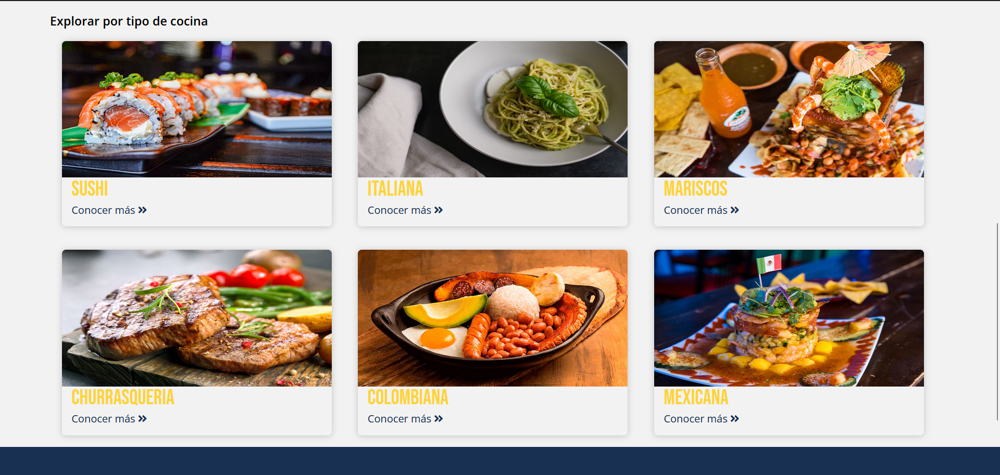
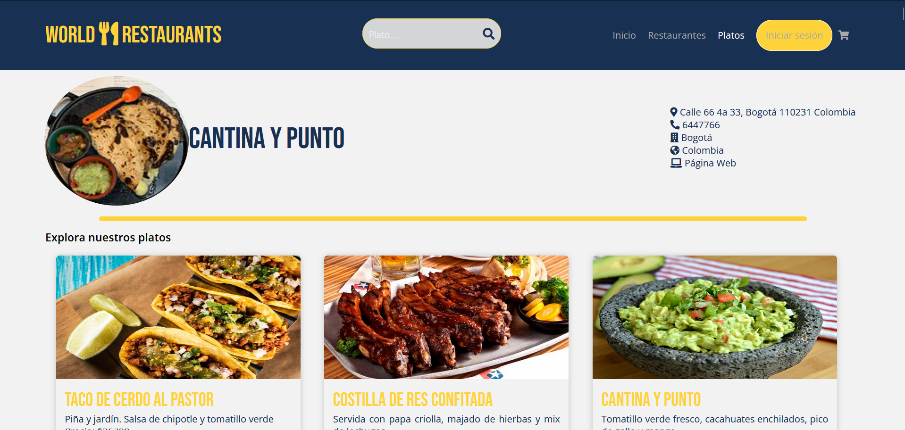
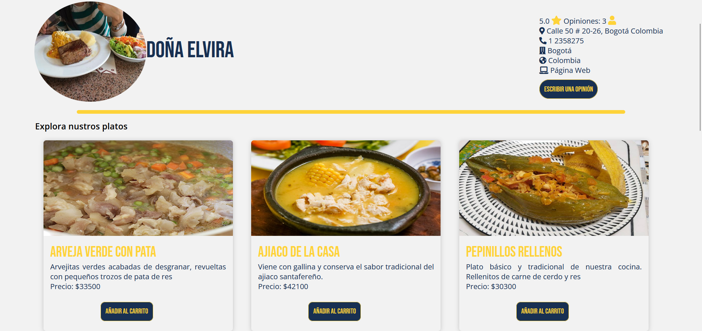
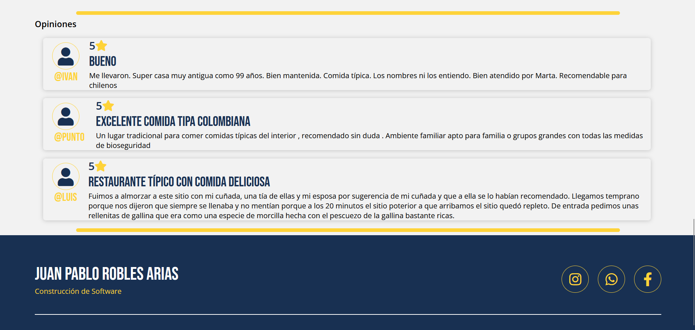
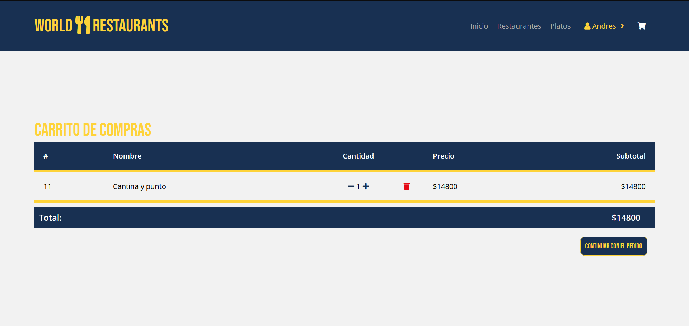
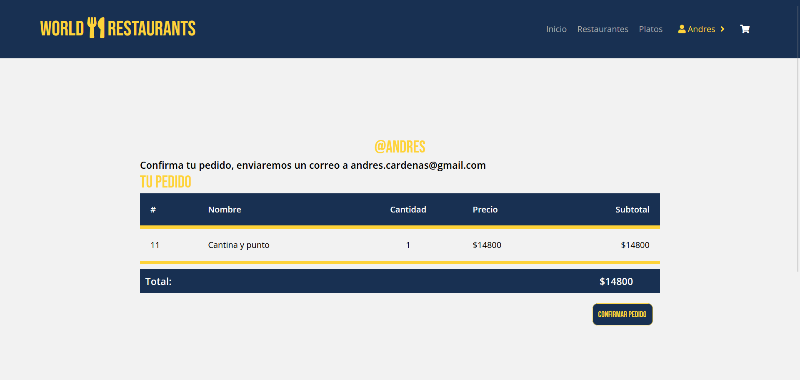
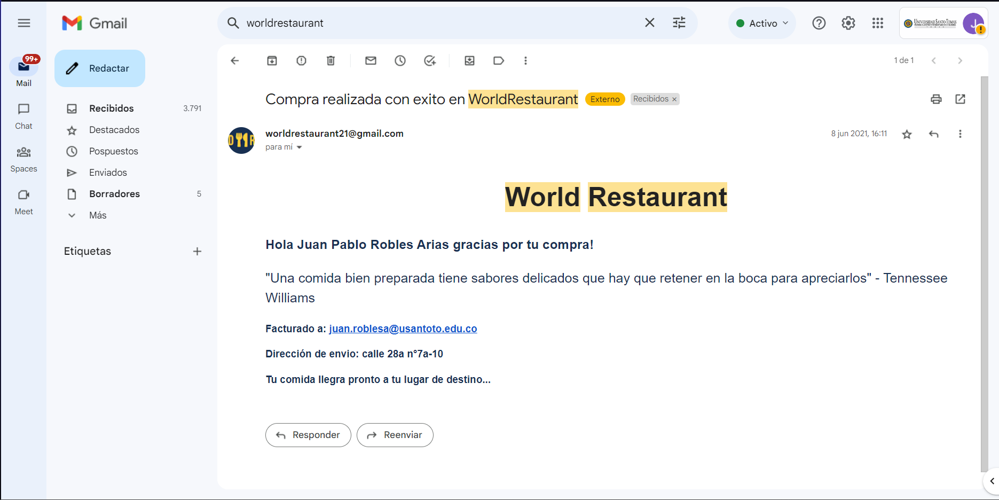
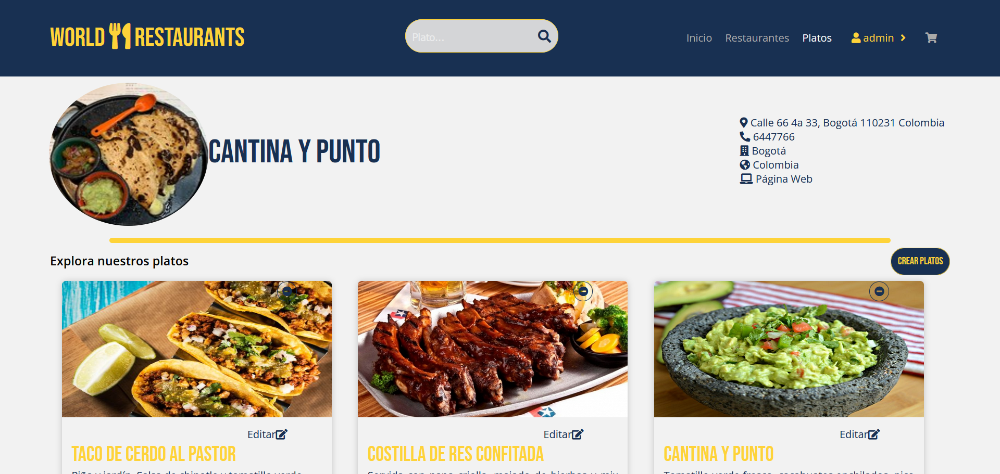

Details
Bienvenidos a World Restaurant, una innovadora aplicación web desarrollada con Django que te permite explorar y hacer pedidos de platos de diferentes restaurantes de todo el mundo. Nuestro objetivo es brindarte una experiencia culinaria única, donde podrás descubrir una amplia variedad de tipos de restaurantes y platos, todo en un solo lugar.
Características principales:
-
1.
Explora una amplia selección de restaurantes: World Restaurant te
ofrece una amplia variedad de restaurantes, desde cocina local
hasta platos internacionales exóticos. Con solo unos clics, podrás
descubrir una lista completa de opciones para satisfacer tus
antojos y deseos culinarios.
-
2.
Valoraciones y opiniones de usuarios: En World Restaurant, la
comunidad de usuarios es fundamental. Podrás acceder a las
valoraciones y opiniones que otros comensales han compartido sobre
los restaurantes y platos que han probado. Esto te permitirá tomar
decisiones informadas y elegir lo mejor que cada establecimiento
tiene para ofrecer.
-
3.
Sistema de pedidos fácil y seguro: Nuestra aplicación te ofrece un
proceso de pedido rápido y seguro. Simplemente selecciona los
platos que desees del menú de tu restaurante preferido y agrega
los elementos a tu carrito. Una vez que hayas terminado, procede a
realizar el pago de forma segura y confiable.
-
4.
Confirmación de pedidos por correo electrónico: Para garantizar
que estés siempre informado sobre el estado de tu pedido,
recibirás una confirmación por correo electrónico con los detalles
de tu compra. Además, te mantendremos al tanto del tiempo estimado
de entrega para que puedas estar preparado para disfrutar de tu
deliciosa comida.
-
5.
Perfiles personalizados: World Restaurant te permite crear un
perfil personalizado donde podrás guardar tus restaurantes y
platos favoritos, agilizando así tus futuras compras y facilitando
la experiencia en cada visita.
-
6.
Administración de restaurantes y platos (CRUD): Como administrador
de World Restaurant, tendrás acceso exclusivo a un panel de
control donde podrás realizar operaciones CRUD (Crear, Leer,
Actualizar y Borrar) de los diferentes restaurantes y platos
disponibles en la plataforma. Esto te brindará un control total
sobre el contenido y te permitirá agregar nuevos restaurantes,
actualizar información relevante y eliminar registros obsoletos.
Project information
- Category: Web App
- Client: World Restaurant
- Project date: June, 2021